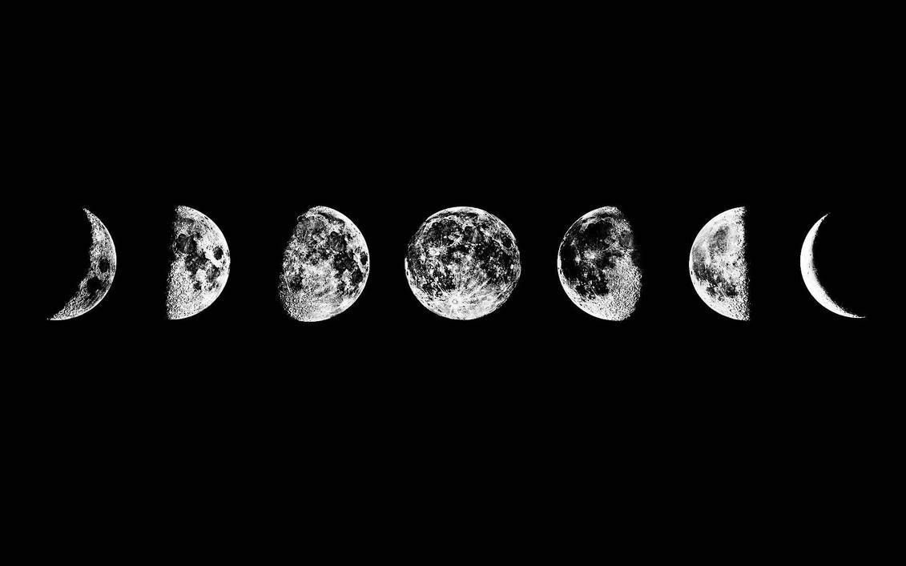
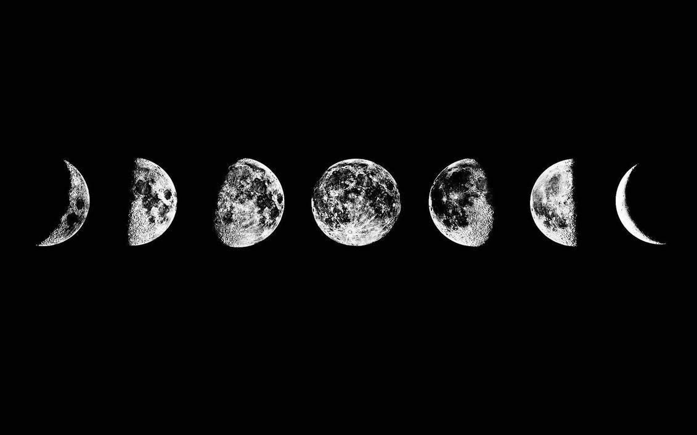
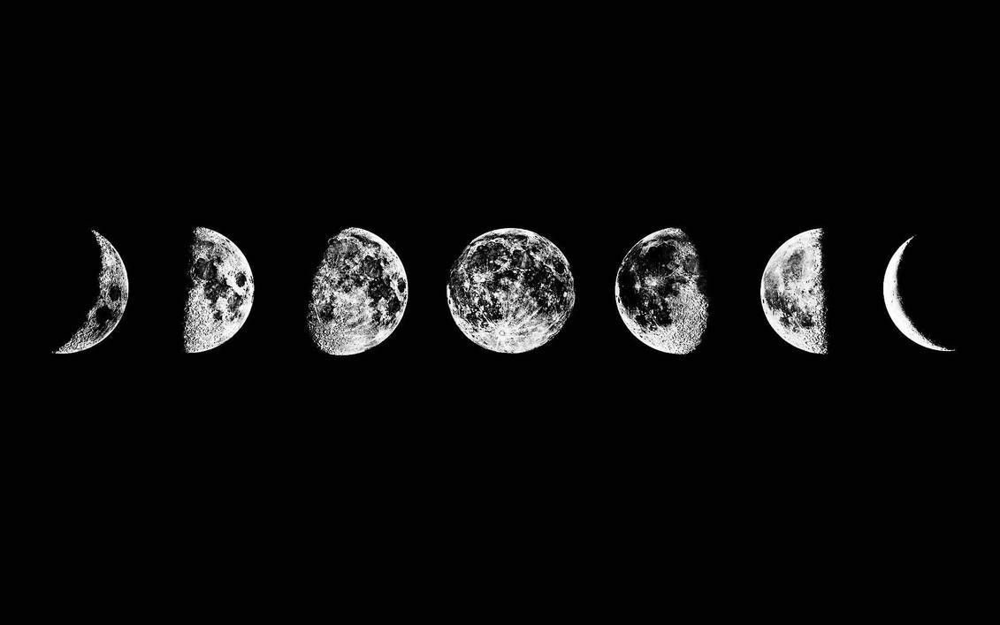
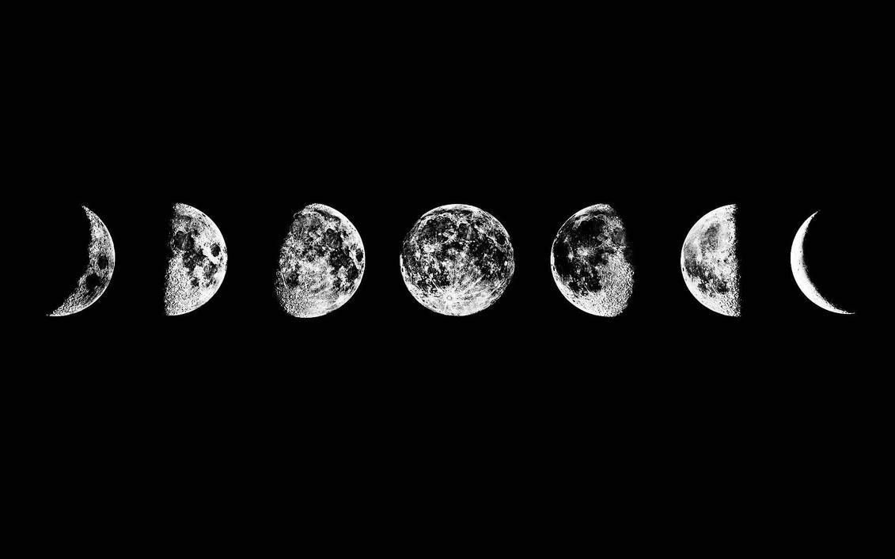

Andreea-Bianca Enache
 



🌕 My name is Bianca
🌖 I am currently 19 years old
🌗 I am from the Balkans, more precisely Romania =)
🌘 I truly believe that studying abroad is the best choice for me because I will have a chance to meet new people and discover a different culture, change my entire environment and move out of my comfort zone, which I think is where most people tend to produce their best work.
❤️ My way of enjoying my time is by listening to music
Some of my favorite bands are Arctic Monkeys, BABYMETAL, Bring Me The Horizon, Bullet For My Valentine,
Deftones, Disturbed, Ghost, Slipknot and System Of A Down.
❤️ When I feel creative I like to invest my energy into drawing.
❤️ I like watching anime
❤️ Gaming (even though I'm not the best=)
❤️ I have a big passion for folklore, legends and mythical creatures.